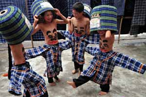
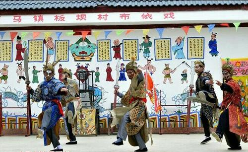
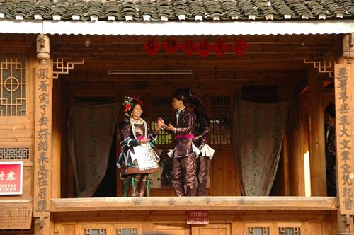
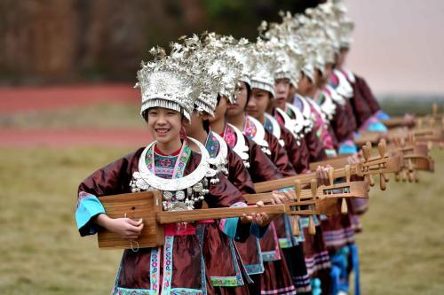
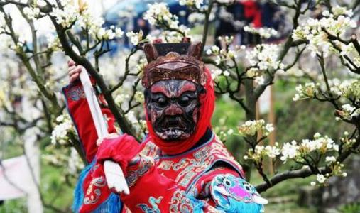
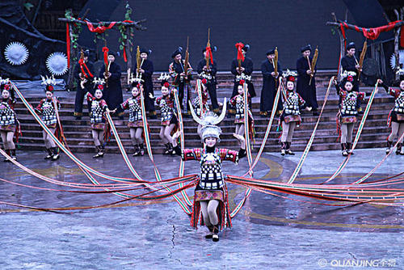
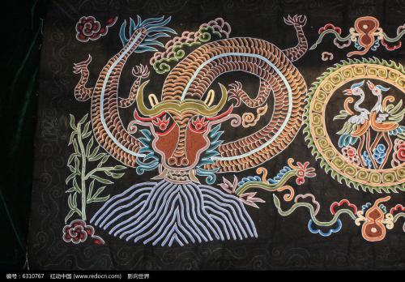
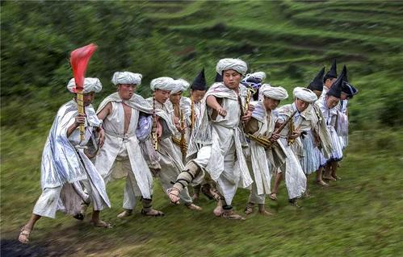
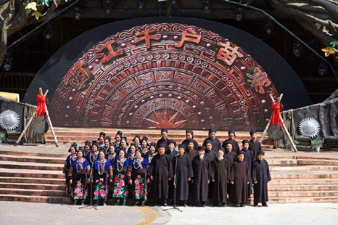
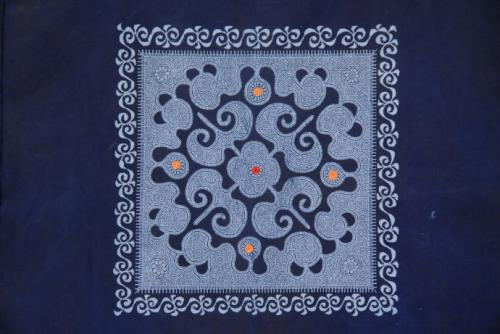

贵州部分非物质文化遗产
-

雯当姆
布依族民间舞蹈“雯当姆”，流传于贵州省荔波县洞塘乡及翁昂乡布依族地区。县内山川秀丽，气候宜人，四季如春，因喀斯特面积大、地貌多样，生物丰富，与云南石林、重庆武隆共同申报“中国南方喀斯特”于2007年6月27日，被第31届世界遗产大会列为世界自然遗产。 -

册亨布依戏
布依戏为首批国家级非物质文化遗产名录项目之一。布依戏，过去称“土戏”、“欢戏”，在布依语中称“谷艺”。册亨县布依戏主要流传于巧马镇、丫他镇、秧坝镇、弼佑乡、八渡镇、百口乡、双江镇、者楼镇等地。 -

侗戏
侗戏流传于贵州省黎平县、榕江县、从江县，广西自治区三江侗族自治县以及湖南省通道自治县的部分侗族村寨。黎平位于贵州东南部，东连湖南靖州、通道，南临广西三江，西北两面与从江、榕江、剑河、锦屏接壤，是黔、湘、桂三省区交界地。县境内民族众多，侗族占60%以上。 -

琵琶歌
侗族琵琶歌分布于侗族南部方言地区，可分为抒情琵琶歌和叙事琵琶歌两大类。其歌唱内容几乎涵盖了侗族历史、神话、传说、故事、古规古理、生产经验、婚恋情爱、风尚习俗、社会交往等各个方面 -

福泉阳戏
福泉阳戏由内坛和外坛两部分组成。内坛就是以祭祀仪式出现的二十四坛法事，具有还愿的性质，故民间又称为“还阳戏”、“还愿戏”或“愿戏”，有开坛、发牒、正清、领牲等二十四请神、延神、酬神、送神仪式和“上刀山”、“下火海”、“顶华盖”、“悬钩钓斗”等特技（法术）表演。 -

锦鸡舞
苗族锦鸡舞主要分布在丹寨县排调镇的也改、党早、甲石、排保、南群、加配、麻鸟、羊先、羊告、也都和雅灰乡境内雅灰、送陇等苗族村寨。 -

马尾绣
马尾绣是一种传统刺绣工艺，由水族妇女世代相传。这个古老民族的每个人都是大自然的工匠。就连一根细细的马尾毛，在他们手里都能变成一件件精美的工艺品。 -

苗族大迁徙舞
分布于贵州省赫章县河镇、可乐等乡镇。苗族大迁徙舞苗族称“够戛底戛且”，意为寻找居住的地方，为赫章苗族记载苗族大迁徙历史过程的民间舞蹈。 -

苗族古歌
苗族古歌内容包罗万象，从宇宙的诞生、人类和物种的起源、开天辟地、初民时期的滔天洪水，到苗族的大迁徙、苗族的古代社会制度和日常生产生活等，无所不包，成为苗族古代神话的总汇。 -

织金蜡染
贵州织金蜡染被誉为“世界上最精细的蜡染”、“指尖上的芭蕾”，具有两千多年的历史。不管怎么复杂的苗族图腾纹样，绣娘们纯手工绘制也能做得分毫不差，惟妙惟肖。 -

思南花灯
思南花灯在贵州戏剧中有着举足轻重的地位，是广大农民在生产劳动中的必然产物。它的题材、内容、形式都来自人们的日常生活，具有浓厚的乡土气息，婉转动听的唱腔，高亢激越的花灯打击乐，优美迷人的舞蹈以及美丽独特的服饰道具，而倍受人们青睐。